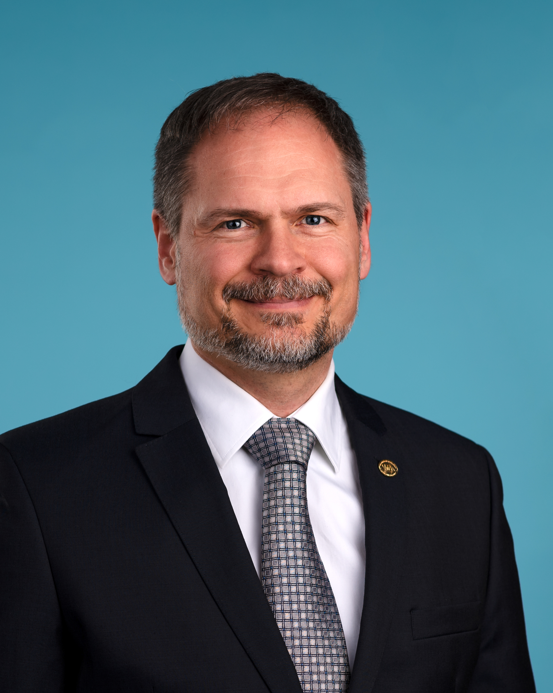

CNSM 2023 Distinguished Expert Panel
Network and Service Management in the Era of Generative AI and Digital Twins
Our panel of experts discuss the recent progress and outstanding challenges of generative AI research and digital twins in network and service management from the AI researcher, network researcher, and network operator perspectives.
Panelists
 Ibrahim Gedeon has built a career in telecommunications by combining insight and skill as an applied scientist with a collaborative approach to leadership. As Chief Technology Officer for TELUS, a leading telecommunications company in Canada, he is responsible for innovation, technology development and strategy. Under Ibrahim’s leadership, the TELUS broadband network has been independently awarded as one of the best in the world.
Ibrahim Gedeon has built a career in telecommunications by combining insight and skill as an applied scientist with a collaborative approach to leadership. As Chief Technology Officer for TELUS, a leading telecommunications company in Canada, he is responsible for innovation, technology development and strategy. Under Ibrahim’s leadership, the TELUS broadband network has been independently awarded as one of the best in the world.

Pal Varga is the Head of Department of Telecommunications and Media Informatics at the Budapest University of Technology and Economics (BME).
He actively promotes bridging the gap between academia and industry, especially ICT vendors, operators, and service providers together with the stakeholders of vertical industrial use cases such as Industry 4.0, smart cities, and health.
His main research interests include communication systems, Cyber-Physical Systems and Industrial Internet of Things, network traffic analysis, end-to-end QoS and SLA issues - for which he is keen to apply hardware acceleration and artificial intelligence, machine learning techniques as well. He advocates for using AI tools and methods in a both creative and responsive manner and provides practice-driven lectures worldwide for the industry. Besides being a member of HTE and Sigma Xi, he is a senior member of IEEE, where he is active both in the IEEE ComSoc (Communication Society) and IEEE IES (Industrial Electronics Society) communities. He is an Editorial Board member in many journals, Associate Editor in IEEE Transactions on Network and Service Management, and the Editor-in-Chief of the Infocommunications Journal.
 Mérouane Debbah is Professor at Khalifa University of Science and Technology in Abu Dhabi. He received the M.Sc. and Ph.D. degrees from the Ecole Normale Supérieure Paris-Saclay, France. He was with Motorola Labs, Saclay, France, from 1999 to 2002, and then with the Vienna Research Center for Telecommunications, Vienna, Austria, until 2003. From 2003 to 2007, he was an Assistant Professor with the Mobile Communications Department, Institut Eurecom, Sophia Antipolis, France. Since 2007, he is Full Professor at CentraleSupelec, Gif-sur-Yvette, France. From 2007 to 2014, he was the Director of the Alcatel-Lucent Chair on Flexible Radio. From 2014 to 2021, he was Vice-President of the Huawei France Research Center. He was jointly the director of the Mathematical and Algorithmic Sciences Lab as well as the director of the Lagrange Mathematical and Computing Research Center. From 2021 to 2023, he was Chief Researcher at the Technology Innovation Institute and leading the AI & Digital Science Research centers at the Technology Innovation Institute. He was also Adjunct Professor with the Department of Machine Learning at the Mohamed Bin Zayed University of Artificial Intelligence in Abu Dhabi. Since 2023, he is a Professor at Khalifa University of Science and Technology in Abu Dhabi and founding director of the 6G center. He has managed 8 EU projects and more than 24 national and international projects. His research interests lie in fundamental mathematics, algorithms, statistics, information, and communication sciences research. He holds more than 50 patents. He is an IEEE Fellow, a WWRF Fellow, a Eurasip Fellow, an AAIA Fellow, an Institut Louis Bachelier Fellow and a Membre émérite SEE.
Mérouane Debbah is Professor at Khalifa University of Science and Technology in Abu Dhabi. He received the M.Sc. and Ph.D. degrees from the Ecole Normale Supérieure Paris-Saclay, France. He was with Motorola Labs, Saclay, France, from 1999 to 2002, and then with the Vienna Research Center for Telecommunications, Vienna, Austria, until 2003. From 2003 to 2007, he was an Assistant Professor with the Mobile Communications Department, Institut Eurecom, Sophia Antipolis, France. Since 2007, he is Full Professor at CentraleSupelec, Gif-sur-Yvette, France. From 2007 to 2014, he was the Director of the Alcatel-Lucent Chair on Flexible Radio. From 2014 to 2021, he was Vice-President of the Huawei France Research Center. He was jointly the director of the Mathematical and Algorithmic Sciences Lab as well as the director of the Lagrange Mathematical and Computing Research Center. From 2021 to 2023, he was Chief Researcher at the Technology Innovation Institute and leading the AI & Digital Science Research centers at the Technology Innovation Institute. He was also Adjunct Professor with the Department of Machine Learning at the Mohamed Bin Zayed University of Artificial Intelligence in Abu Dhabi. Since 2023, he is a Professor at Khalifa University of Science and Technology in Abu Dhabi and founding director of the 6G center. He has managed 8 EU projects and more than 24 national and international projects. His research interests lie in fundamental mathematics, algorithms, statistics, information, and communication sciences research. He holds more than 50 patents. He is an IEEE Fellow, a WWRF Fellow, a Eurasip Fellow, an AAIA Fellow, an Institut Louis Bachelier Fellow and a Membre émérite SEE.
 Pascal Poupart is a Professor in the David R. Cheriton School of Computer Science at the University of Waterloo, Waterloo (Canada). He is also a Canada CIFAR AI Chair at the Vector Institute and a member of the Waterloo AI Institute. He serves on the advisory board of the AI Institute For Advances in Optimization (2022-present). He served as Research Director and Principal Research Scientist at the Waterloo Borealis AI Research Lab funded by the Royal Bank of Canada (2018-2020). He also served as scientific advisor for ProNavigator (2017-2019), ElementAI (2017-2018) and DialPad (2017-2018). He received the B.Sc. in Mathematics and Computer Science at McGill University, Montreal (Canada) in 1998, the M.Sc. in Computer Science at the University of British Columbia, Vancouver (Canada) in 2000 and the Ph.D. in Computer Science at the University of Toronto, Toronto (Canada) in 2005. His research focuses on the development of algorithms for Machine Learning with application to Natural Language Processing and Material Design. He is most well known for his contributions to the development of Reinforcement Learning algorithms. Notable projects that his research team are currently working on include Bayesian federated learning, probabilistic deep learning, data efficient reinforcement learning, conversational agents, automated document editing, sport analytics, adaptive satisfiability and CO2 conversion & capture.
Pascal Poupart is a Professor in the David R. Cheriton School of Computer Science at the University of Waterloo, Waterloo (Canada). He is also a Canada CIFAR AI Chair at the Vector Institute and a member of the Waterloo AI Institute. He serves on the advisory board of the AI Institute For Advances in Optimization (2022-present). He served as Research Director and Principal Research Scientist at the Waterloo Borealis AI Research Lab funded by the Royal Bank of Canada (2018-2020). He also served as scientific advisor for ProNavigator (2017-2019), ElementAI (2017-2018) and DialPad (2017-2018). He received the B.Sc. in Mathematics and Computer Science at McGill University, Montreal (Canada) in 1998, the M.Sc. in Computer Science at the University of British Columbia, Vancouver (Canada) in 2000 and the Ph.D. in Computer Science at the University of Toronto, Toronto (Canada) in 2005. His research focuses on the development of algorithms for Machine Learning with application to Natural Language Processing and Material Design. He is most well known for his contributions to the development of Reinforcement Learning algorithms. Notable projects that his research team are currently working on include Bayesian federated learning, probabilistic deep learning, data efficient reinforcement learning, conversational agents, automated document editing, sport analytics, adaptive satisfiability and CO2 conversion & capture.
Moderators
Alberto Leon Garcia and James Won-Ki Hong